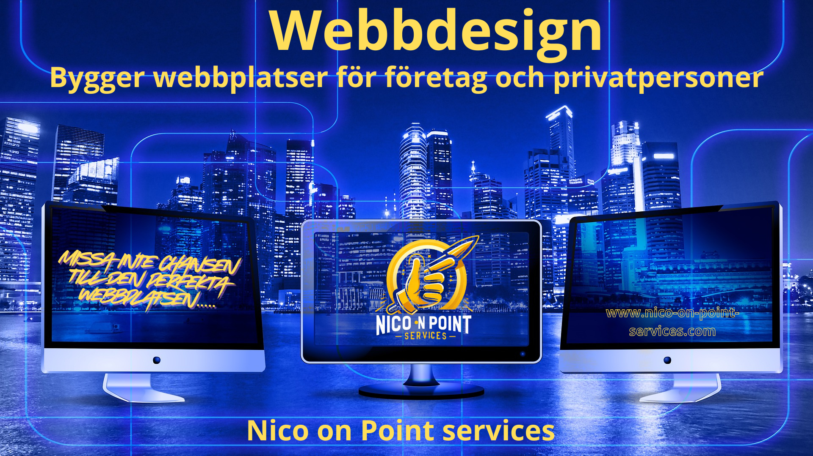

Praktisk hjälp med fastighetsarbete, renoveringar, installationer & datorer


Ursprungligen från Amsterdam i Nederländerna har jag många års erfarenhet inom bygg, tekniska tjänster och IT. Under åren har jag tagit flera olika examina och certifieringar, och arbetat med många projekt – även för flera (halv)statliga organisationer. Den här kombinationen av erfarenheter har gett mig en solid förståelse för både praktiskt hantverk och modern teknik.
Nu baserad i vackra Värmland kombinerar jag alla dessa färdigheter för att hjälpa människor med allt som behöver repareras, installeras eller förbättras. Oavsett om det handlar om en liten hemreparation, ett tekniskt problem eller ett större renoveringsprojekt – jag tar hand om varje uppgift med noggrannhet, omtanke och en rak, ärlig inställning.
På den tekniska sidan är jag också passionerad över att bygga och reparera anpassade datorer – från tysta och effektiva arbetsstationer till högpresterande gamingriggar med avancerad vätskekylning. Jag ser till att varje bygge fungerar perfekt och ser snyggt ut.
Jag är en praktiskt lagd problemlösare som gillar att hitta smarta och effektiva lösningar, både i hem och för företag. Du kan räkna med professionella resultat, ärlig kommunikation och rimliga priser från 450 SEK/timme.
Jag är baserad i vackra Värmland, men reser över hela Sverige för att hjälpa människor att få saker gjorda. Oavsett om det handlar om att hänga upp en lampa, fixa en droppande kran, montera möbler eller göra små reparationer hemma – jag är din självklara kontakt för alla de där vardagliga jobben som får hemmet att kännas komplett.
Jag tar också på mig större projekt som renoveringar, installationer och felsökning – alltid med noggrannhet, precision och en no-nonsense-attityd.
Och för alla teknikentusiaster där ute: jag designar, bygger och reparerar skräddarsydda datorer, inklusive högpresterande gamingdatorer med vätskekylning. Varje bygge anpassas efter dina behov för bästa möjliga prestanda och ett rent, professionellt utseende.
Du får ärliga råd, rättvisa priser och pålitlig service som alltid är on point. Oavsett om du behöver en snabb lösning eller har en stor idé – låt oss få det gjort!
Du får ärliga råd, rättvisa priser och pålitlig service som alltid levererar. Oavsett om du behöver en snabb lösning eller har en stor idé – låt oss förverkliga den tillsammans!


Många IT-problem kan lösas snabbt och säkert på distans – ofta utan att något besök behövs. Jag hjälper både privatpersoner och småföretag över hela Sverige med praktisk, rak och pålitlig support som helt enkelt fungerar.
Jag använder säkra, inbjudningsbaserade verktyg för skärmdelning och support, med tydlig kommunikation i varje steg. Support finns tillgänglig på engelska, tyska och nederländska.
Berätta vad du behöver — om besök på plats krävs är jag baserad i Värmland och reser över hela Sverige. Använd kontaktformuläret nedan så hör jag av mig snart.
Vänlig och pålitlig hjälp för dina kunder — utan extra kostnader. Jag erbjuder fjärrbaserad kundsupport på begäran för företag i hela världen.
Jag använder säkra, inbjudningsbaserade verktyg för skärmdelning. Kortare uppdrag eller löpande support — du väljer.